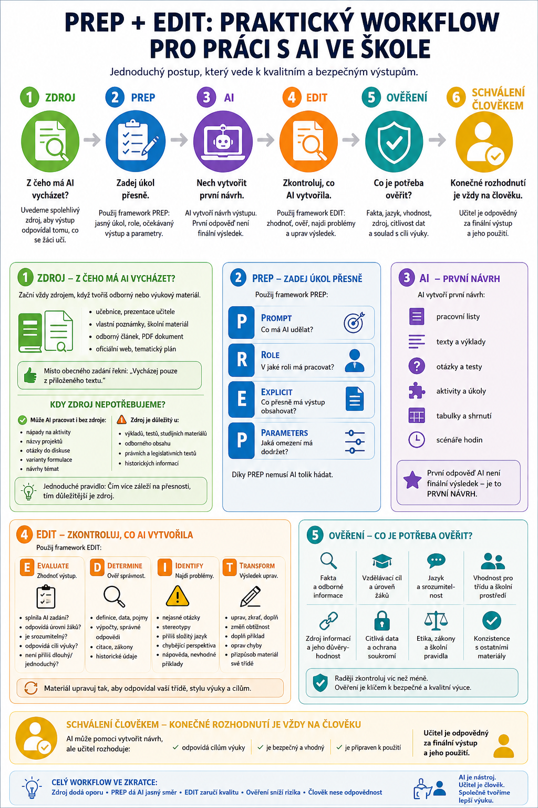

Ještě před několika lety se školy ptaly:
Máme žákům ChatGPT zakázat?
V roce 2026 už je tahle otázka příliš jednoduchá.
Generativní AI je součástí běžných nástrojů, které používají žáci, učitelé i zaměstnanci. Najdeme ji v kancelářských aplikacích, vyhledávačích, telefonech, vzdělávacích nástrojích i samostatných službách.
Školní pravidla proto nemohou stát pouze na větě:
Používání AI je zakázáno.
Stejně tak ale nestačí říct:
Používejte AI podle vlastního uvážení.
Škola potřebuje jasně určit:
- kdy je AI povolena,
- kdy je její použití omezené,
- kdy ji použít nelze,
- jak chránit osobní údaje,
- jak mají AI používat učitelé,
- jak mají její použití přiznávat žáci,
- kdo odpovídá za výsledek,
- jak se AI může používat při hodnocení,
- a jak bude škola rozvíjet AI gramotnost.

Proč už nestačí několik vět ve školním řádu?
Protože AI zasahuje do několika různých oblastí najednou.
Jde například o:
Výuku
Jak může žák AI používat při úkolu?
Hodnocení
Může učitel využít AI při přípravě zpětné vazby?
Ochranu osobních údajů
Co smíme vložit do externí AI služby?
Autorství
Musí žák přiznat použití AI?
Bezpečnost
Které nástroje mohou zaměstnanci školy používat?
AI gramotnost
Rozumějí zaměstnanci a žáci možnostem i rizikům AI?
Proto je vhodnější vytvořit ucelenou školní AI politiku nebo směrnici, která stanoví základní principy pro celou školu.
V roce 2026 už nejde jen o dobrovolnou modernizaci školy
Evropský AI Act obsahuje povinnost poskytovatelů a subjektů, které AI systémy nasazují, přijímat opatření podporující AI gramotnost zaměstnanců a dalších osob používajících AI jejich jménem.
Aktuální znění článku 4 po změně z července 2026 už nestanovuje žádnou konkrétní „dostatečnou úroveň“ AI gramotnosti. Organizace ale mají přijímat opatření s ohledem na znalosti, zkušenosti, vzdělání uživatelů a kontext, ve kterém je AI používána.
Dohled a prosazování pravidel článku 4 se od srpna 2026 přesouvá do praktické fáze prostřednictvím příslušných národních orgánů. Evropská komise současně zveřejňuje příklady postupů, jak organizace AI gramotnost řeší.
Pro školu z toho plyne důležitý princip:
Nestačí zaměstnancům zpřístupnit AI nástroje. Je potřeba také řešit, zda vědí, jak je bezpečně a odpovědně používat.
Českým školám už doporučení existují
Národní pedagogický institut doporučuje školám přistupovat k AI systematicky a neřešit ji pouze zákazem.
Jeho doporučení jsou postavena kolem sedmi oblastí:
- otevřené komunikace,
- individualizace učení,
- AI gramotnosti,
- odpovědnosti za výstupy,
- práv dětí a soukromí,
- prospěšnosti a přiměřenosti,
- svobody a životní pohody.
Doporučení jsou vytvořena zvlášť pro vedení školy, učitele, žáky a rodiče a školy si je mohou přizpůsobit vlastní situaci.
To je dobrý základ i pro tvorbu vlastní školní politiky.
Co by tedy měla školní AI politika obsahovat?
Prakticky bych ji rozdělila alespoň do následujících oblastí.
1. Účel používání AI ve škole
Na začátku by mělo být jasné, proč škola AI vůbec používá.
Například:
Takové ustanovení je důležité.
AI totiž není cíl.
Je to nástroj.
2. Jasná pravidla pro žáky
Žák potřebuje vědět:
Smím AI použít?
A pokud ano:
Jak?
Nejhorší varianta je, když každý učitel používá úplně jiná pravidla a žák se musí každou hodinu dohadovat, co se vlastně smí.
Pomoci může jednoduchý systém několika režimů.
🟢 AI JE POVOLENA
Žák může AI využívat například k:
- brainstormingu,
- vysvětlení pojmu,
- procvičování,
- tvorbě otázek,
- jazykovému tréninku,
- hledání variant řešení.
Učitel může požadovat uvedení způsobu použití.
🟡 AI JE POVOLENA S OMEZENÍM
Například:
AI můžete použít pro hledání nápadů a kontrolu textu, ale konečný text musí být vlastní.
Nebo:
AI můžete použít, ale musíte odevzdat také prompty a popsat, co jste na výsledku změnili.
🔴 AI NENÍ POVOLENA
Například při úloze, kde potřebujeme ověřit samostatný výkon:
- některé testy,
- písemné práce,
- diagnostické úlohy,
- zkoušení,
- konkrétní část praktické zkoušky.
Ne proto, že je AI „špatná“.
Ale protože bychom jinak neměřili dovednost žáka.
3. Povinnost přiznat použití AI
Velmi užitečné je nastavit jednoduché pravidlo:
Použití AI není automaticky podvod. Zatajení jejího použití tam, kde má být uvedeno, problém být může.
Nemusíme po žácích vyžadovat akademickou citaci každého rozhovoru s chatbotem.
Pro běžnou práci může stačit například:
Použití: návrh osnovy a kontrola gramatiky
Finální text: upraven vlastními slovy
Nebo:
Žák se tím učí transparentnosti a odpovědnosti za vlastní práci.
4. Žák odpovídá za odevzdaný výsledek
Velmi důležité pravidlo:
„To napsala AI“ není omluva za chybu.
Pokud žák odevzdá text obsahující:
- nepravdivou informaci,
- neexistující zdroj,
- nevhodný obsah,
- chybný výpočet,
odpovídá za odevzdaný výsledek stejně, jako kdyby použil jiný nástroj.
Proto je vhodné učit princip:
5. Pravidla musí platit také pro učitele
AI politika nemůže být dokument:
„Co nesmějí dělat žáci.“
AI používají také zaměstnanci školy.
Proto musí být jasné, jak ji mohou používat například při:
- přípravě výuky,
- tvorbě pracovních listů,
- tvorbě testů,
- komunikaci,
- hodnocení,
- administrativě,
- práci s dokumenty.
Učitel může AI použít jako pomocníka
Například:
- vytvoř první návrh pracovního listu,
- navrhni otázky,
- vytvoř jednodušší variantu,
- pomoz formulovat zpětnou vazbu.
Ale výsledný materiál musí před použitím zkontrolovat.
AI nesmí získat postavení:
„Systém to rozhodl, takže to tak je.“
6. AI a hodnocení žáků
Tohle bych ve školní politice uvedla samostatně.
Je rozdíl mezi:
AI pomáhá učiteli připravit podklady
a
AI rozhoduje o výsledném hodnocení žáka.
První může být při vhodném nastavení užitečné.
Druhé je podstatně problematičtější.
AI může například:
- navrhnout komentář podle rubriky,
- upozornit na jazykové chyby,
- porovnat text se stanovenými kritérii,
- navrhnout otázky pro zpětnou vazbu.
Finální pedagogické hodnocení by ale měl provést učitel.
7. Osobní údaje jsou jedna z nejdůležitějších hranic
Do běžných veřejných AI služeb není rozumné bez jasného právního a technického rámce vkládat například:
- jméno a příjmení žáka,
- datum narození,
- kontaktní údaje,
- známky propojené s konkrétní osobou,
- zdravotní informace,
- kázeňské problémy,
- poradenskou dokumentaci,
- informace o rodinné situaci,
- jiné citlivé informace.
Zvláštní kategorie osobních údajů, kam patří například údaje o zdravotním stavu, mají podle GDPR zvýšenou ochranu.
Evropský sbor pro ochranu osobních údajů zároveň připomíná, že děti vyžadují při zpracování osobních údajů zvláštní ochranu.
Anonymizace pomůže – ale musí být skutečná
Místo:
Jan Novák z 2.B má dyslexii a ADHD, tady je zpráva z poradny…
můžeme AI říct:
AI většinou nepotřebuje znát identitu konkrétního žáka, aby nám pomohla vytvořit vhodný materiál.
To je velmi praktický bezpečnostní princip:
Poskytnout AI pouze údaje, které skutečně potřebuje.
8. Škola by měla určit povolené nástroje
Ne každá AI služba má stejné podmínky.
Rozdíly mohou být například v:
- ochraně dat,
- věkových limitech,
- správě účtů,
- používání vloženého obsahu,
- možnostech administrátora,
- zabezpečení.
Proto je vhodné vytvořit alespoň základní seznam:
SCHVÁLENÉ
Nástroje, které škola posoudila a doporučuje.
PODMÍNĚNĚ POVOLENÉ
Nástroje použitelné jen pro určité úkoly nebo bez osobních údajů.
NEPOVOLENÉ
Nástroje, které škola nechce používat například kvůli bezpečnosti nebo podmínkám služby.
Takový seznam musí být průběžně aktualizovatelný.
Není rozumné zabetonovat názvy aplikací na deset let do samotné směrnice.
9. Škola potřebuje řešit AI gramotnost zaměstnanců
Nestačí udělat jedno školení:
„Tady je ChatGPT, napište prompt.“
AI gramotnost by měla zahrnovat například:
- základní princip fungování generativní AI,
- možnosti a limity,
- halucinace,
- ověřování informací,
- bezpečnost,
- ochranu osobních údajů,
- autorská práva,
- pravidla školy,
- vhodné a nevhodné příklady použití,
- odpovědnost člověka.
Článek 4 AI Actu právě tento kontextový přístup podporuje: opatření k AI gramotnosti mají zohledňovat znalosti, zkušenosti a způsob, jakým lidé AI skutečně používají.
10. Jedno školení nestačí navždy
AI se mění příliš rychle.
Proto je praktičtější mít například:
- úvodní školení,
- krátké průběžné aktualizace,
- dostupnou metodiku,
- kontaktní osobu, na kterou se zaměstnanec může obrátit.
Evropská komise vede živé úložiště příkladů postupů AI gramotnosti právě proto, že nejde o jednorázově uzavřené téma.
11. AI gramotnost potřebují také žáci
Žák nepotřebuje pouze vědět:
Jak napsat prompt?
Měl by vědět:
- proč AI chybuje,
- jak ověřit odpověď,
- co je halucinace,
- proč neuvádět osobní údaje,
- jak rozpoznat AI obsah,
- jak přiznat použití AI,
- kdy AI použít,
- kdy ji nepoužívat,
- jak zachovat vlastní práci a myšlení.
Taková AI gramotnost je mnohem důležitější než znalost konkrétního tlačítka v jedné aplikaci.
12. Mysleme na rovné podmínky
Ne každý žák má:
- placenou AI,
- nejnovější telefon,
- notebook,
- rychlý internet,
- stejnou úroveň digitálních dovedností.
Pokud učitel vyžaduje použití určité AI služby, musí řešit:
Má k ní skutečně přístup každý žák?
NPI výslovně doporučuje dbát na to, aby používání AI neprohlubovalo nerovnosti mezi žáky.
To je důležitý princip.
AI nemá vytvořit nový typ školní nerovnosti:
kdo má lepší placený model, má lepší známku.
13. Škola musí myslet také na obsah vytvořený pomocí AI
AI už nevytváří jen text.
Umí generovat:
- obrázky,
- hlas,
- hudbu,
- video,
- realistické fotografie,
- digitální osoby.
Od srpna 2026 se v EU uplatňují také další pravidla transparentnosti týkající se určitých forem AI generovaného nebo upraveného obsahu a označování deepfake obsahu.
I bez řešení detailů konkrétní právní povinnosti je proto pro školu velmi rozumné stanovit princip:
AI vytvořený nebo významně upravený obsah má být v situacích, kde by jeho původ mohl být důležitý, transparentně označen.
14. Zvláštní pozornost věnujme obrázkům skutečných lidí
Generativní AI dnes dokáže velmi realisticky měnit nebo vytvářet podobu konkrétní osoby.
Tady už nejde o nevinnou hračku.
Evropští regulátoři ochrany soukromí v roce 2026 výslovně upozornili na rizika AI generovaných realistických obrázků a videí skutečných osob, zejména pokud jde o děti, šikanu, poškození pověsti nebo intimní obsah bez souhlasu.
Školní pravidla proto mohou jasně zakázat například:
- vytváření falešných intimních obrázků,
- ponižující úpravy fotografií spolužáků,
- deepfake učitelů nebo žáků určený k zesměšnění,
- vydávání AI obsahu za autentický záznam skutečné osoby.
To už není „sranda s AI“.
Může jít o velmi vážný zásah do práv člověka.
15. Co dělat při porušení pravidel?
AI politika by měla obsahovat také postup.
Například:
- zjistit, co se skutečně stalo,
- určit rozsah použití AI,
- posoudit dopad,
- rozlišit neznalost od úmyslného podvodu nebo škodlivého jednání,
- postupovat podle školních pravidel,
- současně situaci využít k rozvoji AI gramotnosti.
Není vhodné automaticky považovat každé použití AI za podvod.
Stejně tak ale není rozumné ignorovat úmyslné zneužití.
16. Zapojme do pravidel také žáky
To může znít zvláštně, ale dává to smysl.
Můžeme se žáků zeptat:
- Kdy podle vás AI pomáhá při učení?
- Kdy už dělá práci místo vás?
- Jak by měl žák použití AI přiznat?
- Kdy by měla být při testu zakázána?
- Jaké použití by vám připadalo nefér?
NPI doporučuje zapojovat učitele i žáky do rozhodování o používání AI ve škole.
Pravidla, kterým žáci rozumějí, bývají praktičtější než dokument, který jednou dostanou k podpisu a už ho nikdy neuvidí.
17. Informujme také rodiče
Rodiče by měli vědět například:
- jak škola AI používá,
- jaká pravidla platí pro žáky,
- jak škola chrání osobní údaje,
- zda budou žáci používat konkrétní AI nástroje,
- jak škola přistupuje k hodnocení a autorství.
Není potřeba rodičům posílat dvacetistránkovou právní přednášku.
Praktické shrnutí základních pravidel bývá užitečnější.
18. Pravidla musí být živý dokument
Tohle je možná nejpraktičtější doporučení.
AI směrnice vytvořená v roce 2026 nebude beze změn použitelná do roku 2036.
Technologie, nástroje, legislativa i školní zkušenost se mění příliš rychle.
Proto má smysl stanovit:
Směrnice bude pravidelně revidována, například jednou ročně nebo při významné změně legislativy či používaných technologií.
Samotné principy mohou být dlouhodobé.
Seznam konkrétních nástrojů a technické postupy mohou být v přílohách, které lze aktualizovat častěji.
Jak může vypadat struktura školní AI politiky?
Praktická směrnice může obsahovat například:
1. Účel a působnost
Koho se pravidla týkají?
2. Základní pojmy
Co škola rozumí pod generativní AI?
3. Základní principy
Bezpečnost, odpovědnost, transparentnost, lidský dohled.
4. Pravidla pro zaměstnance
Jak mohou AI používat učitelé a další pracovníci?
5. Pravidla pro žáky
Kdy je AI povolena, omezená a zakázaná?
6. Hodnocení
Jak se AI může používat při přípravě a hodnocení práce?
7. Osobní údaje
Co do AI nevkládat?
8. Schválené nástroje
Jaké služby škola používá?
9. AI gramotnost
Jak bude škola vzdělávat zaměstnance a žáky?
10. Transparentnost
Jak se přiznává použití AI?
11. Řešení problémů
Jak postupovat při nevhodném použití?
12. Aktualizace
Kdo pravidla kontroluje a kdy se revidují?
Čtyři věty, které by měl znát každý ve škole
Pokud bychom měli celou AI politiku zredukovat na úplné minimum, mohlo by to být:
2. Výstup AI není automaticky pravda.
3. Za výsledek, který použiješ nebo odevzdáš, odpovídáš ty.
4. Když má být použití AI přiznáno, přiznej ho.
To už samo o sobě řeší překvapivě velkou část každodenních situací.
Zákaz AI problém nevyřeší
Plošný zákaz může působit jednoduše.
Ve skutečnosti často jen přesune používání AI mimo dohled školy.
Žáci ji budou používat doma.
Učitelé ji budou používat při přípravě.
AI bude součástí jiných aplikací.
A škola ztratí možnost učit, jak ji používat dobře.
To neznamená, že AI musí být povolena vždy.
Znamená to, že pravidla mají být založena na účelu a riziku, ne na panice z technologie.
Dobrá školní AI politika není seznam zákazů
Je to společná dohoda:
proč to používáme,
co tam nevkládáme,
co musíme kontrolovat,
kdy AI přiznáváme,
a kde musí rozhodovat člověk.
Taková pravidla mohou škole umožnit využívat AI a současně držet hranice tam, kde jsou skutečně potřeba.
Školní AI politika v jedné větě
Co následuje?
Tím máme pokrytou jednu z nejdůležitějších oblastí práce školy s AI.
Další článek série můžeme věnovat tématu:
AI gramotnost učitele: Co by měl pedagog v roce 2026 skutečně umět
Ne seznam padesáti aplikací, ale praktické kompetence:
- umět vybrat vhodný AI nástroj,
- zadat mu úkol,
- pracovat se zdroji,
- rozpoznat chybný výstup,
- chránit data,
- používat AI pedagogicky smysluplně,
- a vědět, kdy ji raději nepoužít.
Zdroje a další informace
Aktuální evropský rámec vychází zejména z AI Actu, článku 4 o AI gramotnosti, jeho aktualizovaného znění z roku 2026 a metodických materiálů Evropské komise.
Pro české školní prostředí jsou užitečná také doporučení Národního pedagogického institutu Jak na AI ve škole, která pracují se sedmi oblastmi bezpečného a smysluplného používání AI pro vedení školy, učitele, žáky a rodiče.